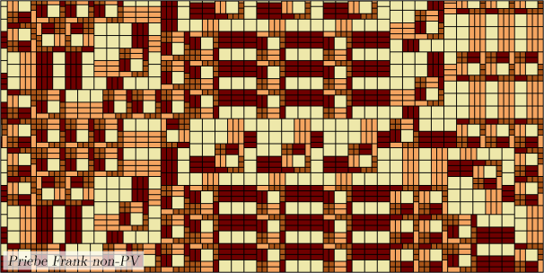
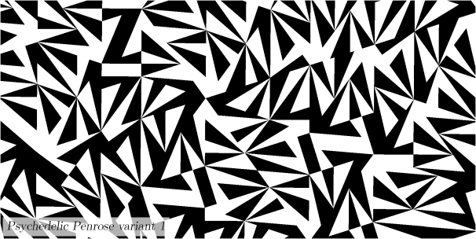

Pavage Ammann A3
Pavage Ammann-Beenker rhomb triangle
Pavage Example of canonical 1
Pavage Example of canonical 2
Pavage Coloured golden triangle
Pavage Cyclotomic rhombs 7-fold
Pavage Danzer's non-FLC 5
Pavage Danzer's 7-fold variant
Pavage Fibonacci times Fibonacci
Pavage Goodman-Strauss 7-fold rhomb
Pavage Harriss's 4-fold rhomb
Pavage Harriss's 9-fold rhomb
Pavage Imbalanced orientations
Pavage Kenyon (1, 2, 1) polygon
Pavage Penrose pentagon boat star
Pavage Pinwheel variant 1
Pavage Pinwheel variant 2
Pavage Pinwheel variant 3
Pavage Pinwheel variant 4
Pavage Pinwheel variant 5

Pavage Pinwheel 1-2

Pavage Priebe Frank non-PV

Pavage Psychedelic Penrose variant 1
Pavage Rhomb square oktagon
Pavage Semi-detached house
Pavage Semi-detached house squared
Pavage Sierpinski's square
Pavage Sierpinski's triangle

Pavage Tangram

Pavage Tipi 3-1
Pavage Triangle duo variant 1
Pavage Triangle duo variant 2
Pavage Triangle duo variant 3
Pavage Tuebingen triangle

Pavage Waltonchair
Pavage Watanabe Ito Soma 8-fold
Pavage Watanabe Ito Soma 12-fold variant 1
Pavage Watanabe Ito Soma 12-fold variant 2
Le fichier Cristallo.mac contient un grand nombre de macros permettant de dessiner de nombreux pavages apériodiques. Dans cette page, nous appellerons pavage apériodique un pavage du plan qui n’est pas périodique. Néanmoins, la signification du terme « apériodique » peut varier d’un ouvrage à l’autre. Les pavages réalisés sont ici tous des pavages dits « par substitution » (ou « substitution tiling » en anglais). Cette terminologie désigne la manière dont sont construits ces pavages. Chacun d’entre eux est composé de un ou plusieurs types de tuiles. Pour chacun de ces types de tuiles, on définit une règle de substitution. Celle-ci permet de décomposer un type de tuiles en un ensemble de plusieurs tuiles de base du pavage.
Les noms attribués aux pavages sont pour la plupart ceux définis sur le site d’Edmund Harriss et D. Frettlöh, The Tiling Encyclopedia, qui a servi de base pour l’élaboration de toutes les macros du fichier.